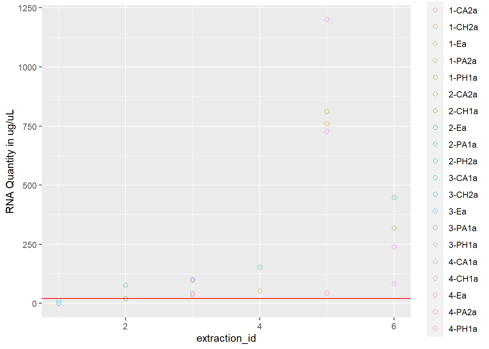
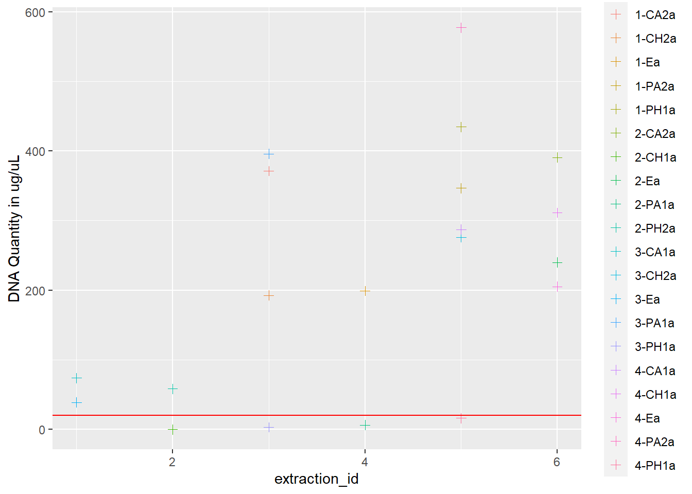
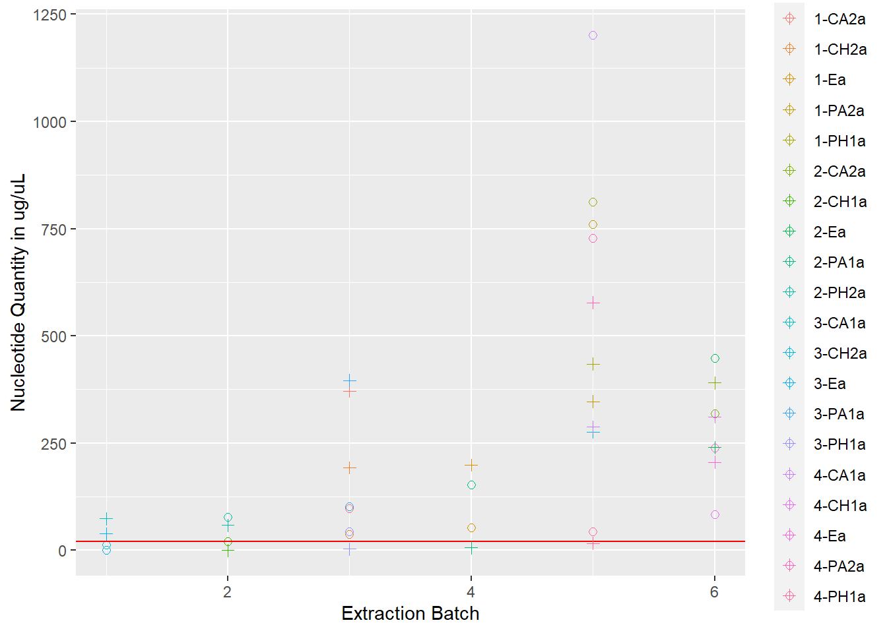
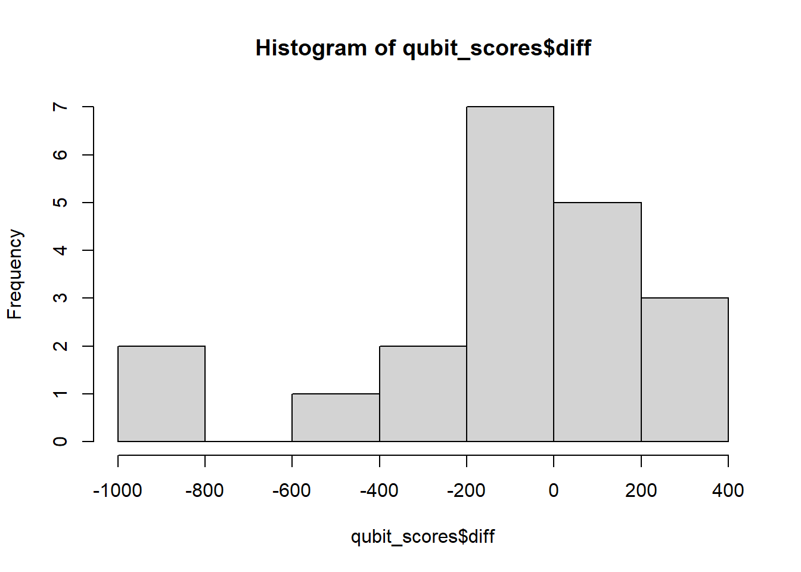
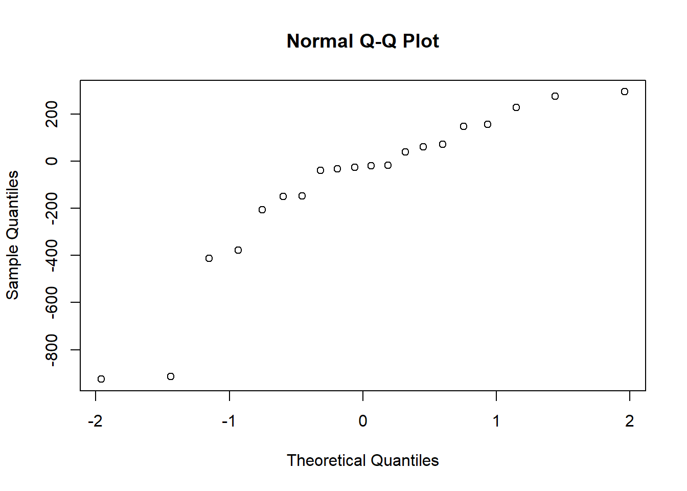

library(tidyverse)
library(ggplot2)
library(readr)extr_meta <- read_csv("output/extractions_metadata.csv")
head(extr_meta)# A tibble: 6 x 19
cryo_id colony pae_treatment temp_treatment tank cryo_rep pae_ugL freeze_date
<chr> <dbl> <chr> <chr> <chr> <chr> <chr> <chr>
1 1-Ea 1 environmental kbay na a na 8/5/2022
2 1-Eb 1 environmental kbay na b na 8/5/2022
3 2-Ea 2 environmental kbay na a na 8/5/2022
4 2-Eb 2 environmental kbay na b na 8/5/2022
5 3-Ea 3 environmental kbay na a na 8/5/2022
6 3-Eb 3 environmental kbay na b na 8/5/2022
# i 11 more variables: cull_notes <chr>, extraction_id <dbl>, extr_date <chr>,
# qubit_rna_run_date <chr>, qubit_rna_1 <dbl>, qubit_rna_2 <dbl>,
# qubit_rna_3 <dbl>, qubit_dna_run_date <chr>, qubit_dna_1 <dbl>,
# qubit_dna_2 <dbl>, qubit_dna_3 <dbl>extracted <- extr_meta %>%
filter(!is.na(extraction_id))
head(extracted, 20)# A tibble: 20 x 19
cryo_id colony pae_treatment temp_treatment tank cryo_rep pae_ugL
<chr> <dbl> <chr> <chr> <chr> <chr> <chr>
1 1-Ea 1 environmental kbay na a na
2 2-Ea 2 environmental kbay na a na
3 3-Ea 3 environmental kbay na a na
4 4-Ea 4 environmental kbay na a na
5 1-CA2a 1 control ambient A2 a 0
6 1-CH2a 1 control hot H2 a 0
7 1-PA2a 1 peak ambient A2 a 150
8 1-PH1a 1 peak hot H1 a 150
9 2-CA2a 2 control ambient A2 a 0
10 2-CH1a 2 control hot H1 a 0
11 2-PA1a 2 peak ambient A1 a 150
12 2-PH2a 2 peak hot H2 a 150
13 3-CA1a 3 control ambient A1 a 0
14 3-CH2a 3 control hot H2 a 0
15 3-PA1a 3 peak ambient A1 a 150
16 3-PH1a 3 peak hot H1 a 150
17 4-CA1a 4 control ambient A1 a 0
18 4-CH1a 4 control hot H1 a 0
19 4-PA2a 4 peak ambient A2 a 150
20 4-PH1a 4 peak hot H1 a 150
# i 12 more variables: freeze_date <chr>, cull_notes <chr>,
# extraction_id <dbl>, extr_date <chr>, qubit_rna_run_date <chr>,
# qubit_rna_1 <dbl>, qubit_rna_2 <dbl>, qubit_rna_3 <dbl>,
# qubit_dna_run_date <chr>, qubit_dna_1 <dbl>, qubit_dna_2 <dbl>,
# qubit_dna_3 <dbl>Qubit RNA BR Assay Kit The Qubit RNA BR (Broad-Range) Assay Kit, when used with the Qubit Fluorometer, provides an accurate and selective method for the quantitation of RNA samples. Depending on sample volume, the assay kit is designed to be accurate for initial RNA sample concentrations of 0.5 to 1,200 ng/µL, providing a detection range of 10−1,200 ng.
** IF RNA QUBIT IS ENTERED AS 1,201 IT WAS TOO HIGH!**
# Make RNA average column and move to after 3rd reading `qubit_rna_3`
extracted <- extracted %>%
mutate(
qubit_rna_avg = rowMeans(select(.,qubit_rna_1, qubit_rna_2, qubit_rna_3))) %>%
relocate(qubit_rna_avg, .after = qubit_rna_3)
# Make DNA average column and move to after 3rd reading `qubit_dna_3`
extracted <- extracted %>%
mutate(
qubit_dna_avg = rowMeans(select(.,qubit_dna_1, qubit_dna_2, qubit_dna_3))) %>%
relocate(qubit_dna_avg, .after = qubit_dna_3)
# Make a slimmed-down version
columns <- c("cryo_id", "extraction_id", "qubit_rna_avg", "qubit_dna_avg")
extracted_slim <- extracted %>%
select(all_of(columns))
# Save this as a running list of extracted samples
write_csv(extracted, "output/extracted.csv")
write_csv(extracted_slim, "output/extracted_slim.csv")# subset to review Qubit Scores
qubit_scores <- extracted %>%
select(cryo_id, extraction_id, qubit_dna_avg, qubit_rna_avg) %>%
arrange(extraction_id)
print(qubit_scores)# A tibble: 20 x 4
cryo_id extraction_id qubit_dna_avg qubit_rna_avg
<chr> <dbl> <dbl> <dbl>
1 3-Ea 1 38.8 0
2 3-CA1a 1 74.1 12.9
3 2-CH1a 2 0 20.8
4 2-PH2a 2 58.5 77.1
5 1-CA2a 3 371. 96.8
6 1-CH2a 3 193. 37.1
7 3-PA1a 3 396 102.
8 3-PH1a 3 3.23 43.4
9 1-Ea 4 199 52.7
10 2-PA1a 4 6.3 153.
11 1-PA2a 5 347. 760
12 1-PH1a 5 435. 812
13 3-CH2a 5 276 1201
14 4-CA1a 5 287. 1201
15 4-PA2a 5 577. 728
16 4-PH1a 5 16.4 43.7
17 2-Ea 6 240 447.
18 4-Ea 6 205. 239.
19 2-CA2a 6 391. 319.
20 4-CH1a 6 311. 83.2# Create base scatterplot
rna <- ggplot(data = extracted, aes(x = extraction_id, y = qubit_rna_avg, color = cryo_id)) +
geom_point(size = 2, shape = 1) +
ylab("RNA Quantity in ug/uL") +
geom_hline(yintercept = 20, linetype = "solid", color = "red")
# save the plot as an PNG file
ggsave("../output/rna.png", plot = rna, width = 8, height = 4, dpi = 600)
# View plot
rna
dna <- ggplot(data = extracted, aes(x = extraction_id, y = qubit_dna_avg, color = cryo_id)) +
geom_point(size = 2, shape = 3) +
ylab("DNA Quantity in ug/uL") +
geom_hline(yintercept = 20, linetype = "solid", color = "red")
# save the plot as an PNG file
ggsave("../output/dna.png", plot = dna, width = 8, height = 4, dpi = 600)
# View plot
dna
rna_dna <- rna +
geom_point(data = extracted, aes(x = extraction_id, y = qubit_dna_avg, color = cryo_id), size = 2, shape = 3) +
scale_shape_manual(name = "Nucleotides", values = c(0, 2), labels = c("RNA", "DNA")) +
ylab("Nucleotide Quantity in ug/uL") +
xlab("Extraction Batch")
# save the plot as an PNG file
ggsave("output/rna_dna.png", plot = rna_dna, width = 8, height = 4, dpi = 600)
# View plot
rna_dna
Wilcoxon Paired-Sample T Test
qubit_scores$diff <- qubit_scores$qubit_dna_avg - qubit_scores$qubit_rna_avg
hist(qubit_scores$diff)
qqnorm(qubit_scores$diff)
shapiro.test(qubit_scores$diff)
Shapiro-Wilk normality test
data: qubit_scores$diff
W = 0.84347, p-value = 0.004152The differences are not normally distributed, (p < 0.05), therefore we cannot use a paired-sample t test. If the data do not meet the assumptions of normality required for parametric tests like the paired t-test, but you want to determine if there is a trend between two paired samples, you can use the Wilcoxon paired-sample T test. This is a non-parametric statistical test used to compare two related samples or repeated measures. It is appropriate for this dataset, because each row of DNA and RNA were extracted from the same sample. Here we really want to know if our Dual extraction method is biased toward optimizing yield for DNA or RNA, or if there is any trend at all. > Our null and alternate hypotheses are:
H0: There is no trend between the paired samples.
H1: There is a trend between the paired samples.
wilcox.test(x=qubit_scores$qubit_dna_avg, y=qubit_scores$qubit_rna_avg, paired=TRUE, alternative = 'two.sided')
Wilcoxon signed rank exact test
data: qubit_scores$qubit_dna_avg and qubit_scores$qubit_rna_avg
V = 86, p-value = 0.498
alternative hypothesis: true location shift is not equal to 0The Wilcoxon signed-rank test, as a non-parametric test, determines whether there is a shift or trend in the paired observations but does not provide information about the direction or magnitude of the shift. It only tells you that there is a significant difference between the paired samples, but it does not indicate which sample has higher values or the direction of the shift.
To determine the direction of the shift, you would need to examine the data and calculate the median or mean of the paired differences. If the median or mean of the differences is positive, it suggests that the second sample tends to have higher values than the first sample. Conversely, if the median or mean is negative, it indicates that the first sample tends to have higher values than the second sample.
To get a better understanding of the direction and magnitude of the shift, you may consider plotting the paired differences or constructing a confidence interval around the median or mean difference. This can provide additional insights into the nature of the shift and help you interpret the results more accurately.